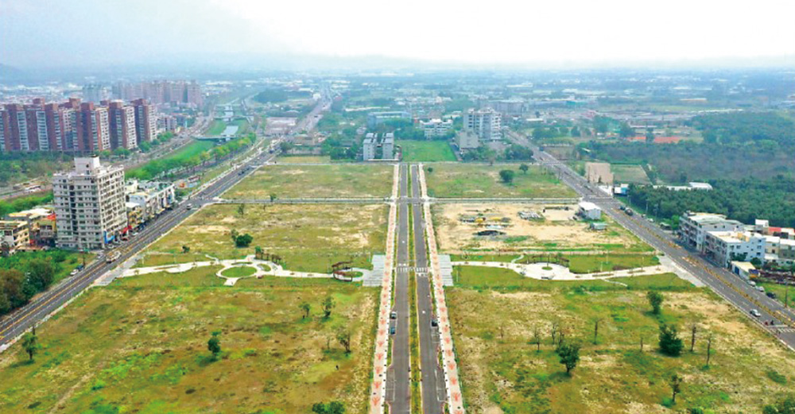

台積電將進駐高雄，傳出周遭房市應聲上漲，對此高雄市長陳其邁昨天表示，將興建社會住宅8800戶，另外希望能增加平價住宅，以因應高雄未來4、5萬戶的需求。
北高預售屋出現15至25%漲幅高雄房仲業指出，台積電效應引發預期心理，北高雄房市跟上半年相比，預售屋開價出現15至25%漲幅，左營高鐵站附近，甚至開出每坪40餘萬價碼，近月來市場很亂。
估有4到5萬戶住宅需求陳其邁昨天赴高市議會施政報告，民進黨市議員黃文志說，台積電進駐高雄消息傳出後，楠梓區已由每坪18、9萬元，漲至23至25萬元不等，詢問市府配套及計畫。

陳其邁表示，高房價不是大家期待的，所以在他上任之後，4年內會興建8800戶社會住宅，其中高市自行興建的有3000戶左右，以增加住宅的供給，也會調節房市，讓年輕人居住獲得保障。
他說，配合產業園區大量人口的進駐，房市的部分也必須取得平衡，就必須能增加住宅的供給，目前估算北高雄的部分，因應園區的開發包括路科、橋科，還有中油園區的開發、南漂人口或就業人口，大概有4萬到5萬戶的住宅需求，這部分一方面用社會住宅，另外就是希望整個住宅的供給能夠增加，並提供平價住宅，給未來進駐的就業人口。
都發局去年11月宣布，中央與地方合作在高雄興建8800戶社會住宅，其中6000戶由中央規劃，將選出10個地方進行，分布於岡山、楠梓、仁武、左營、三民、前鎮、鳳山、小港等區，預計2025年後完成約4000戶；高市府自建部分分別位於岡山、亞洲新灣區、大寮，2年內將陸續啟動。